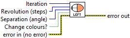
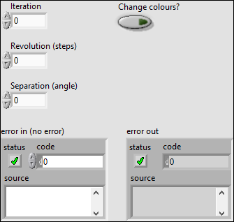
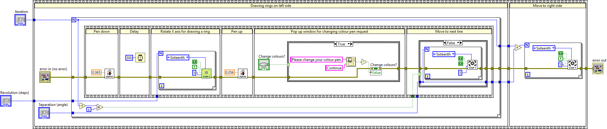
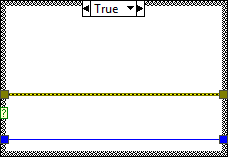
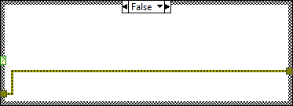

To draw rings on the left side of the round object and move to the right side once left side is finished drawing.
<b>P.s.</b> Left right for horizontal view and top bottom for vertical view.




